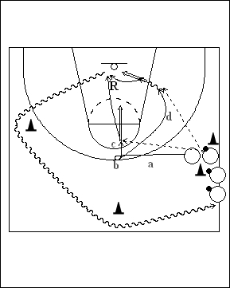

Catégorie : ECHAUFFEMENT (Ech-006)
Déroulement
- Une file de joueurs d’un côté du terrain à hauteur de la ligne à trois points. Tous les joueurs ont un ballon sauf le premier de la file.
- Le premier joueur de la file part vers l’axe anneau-anneau au niveau de la ligne à trois points (a). Là, il effectue un changement de direction (b). Il a alors deux possibilités : soit il demande le ballon du deuxième joueur de la file pour un jump shoot (c), soit il démarre vers la baseline et appelle le ballon pour un lay-up (d). C’est maintenant le deuxième joueur de la file qui effectue le même travail.
- Chaque shooteur réalise son propre rebond et reprend place en dribble derrière la file.
Coaching points
- Il existe évidemment beaucoup d’autres options après le changement de direction. On peut notamment demander de travailler les feintes. On peut demander un shoot de la baseline. On peut aussi introduire le jump stop, la feinte de shoot et le pas de dégagement.